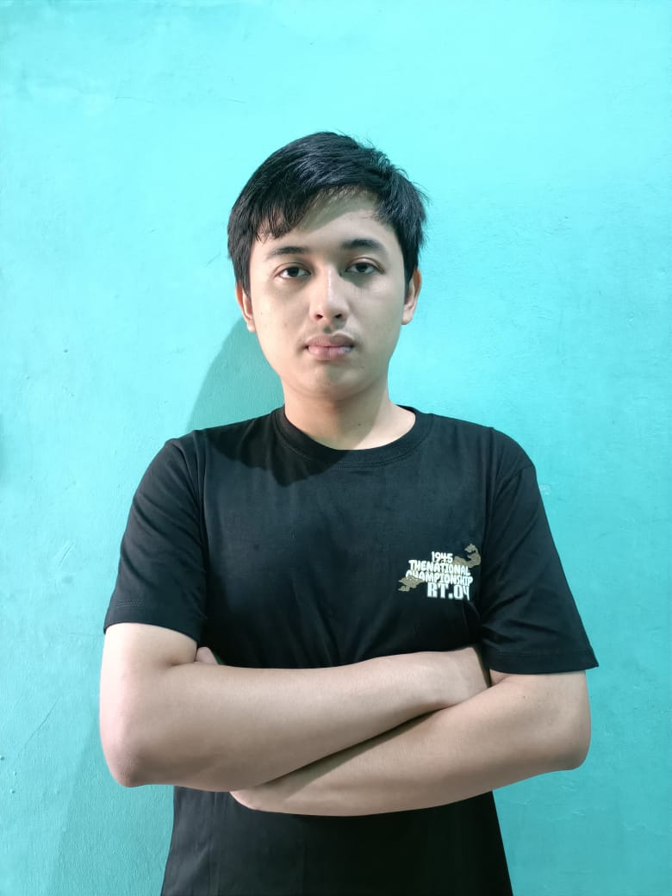
Mahasiswa · Tahun 2025
Saya adalah Mahasiswa Pradita University program studi Teknik Informatika angkatan 2025. Saya memiliki minat besar dalam bidang teknologi. Saya memliki kelebihan dalam coding program. Saya merupakan seseorang yang pekerja keras, ambisius, mudah beradaptasi dan memiliki kemampuan komunikasi yang baik. Saya merupakan mahasiswa yang aktif dalam berorganisasi. Selain memiliki pengalaman berorganisasi, saya juga mempunyai pengalaman PKL di PT.YKK AP Indonesia.
"Teruslah berjuang dan jangan pernah menyerah, karena setiap langkah kecil menuju impianmu adalah kemenangan besar"
Bagi saya, arti hidup itu bukanlah seberapa cepat kita mencapai garis finish, melainkan tentang bagaimana kita menghargai setiap proses di dalamnya. Nikmatilah semua proses yang ada. Awalnya mungkin akan terasa menyakitkan tapi jika terus berusaha dan tidak menyerah, maka saya yakin akan ada cahaya setelah kegelapan tersebut.
"Programmer"
Saya ingin menjadi seorang programmer yang handal dan inovatif yang mampu menciptakan solusi dari masalah yang kompleks dengan menggunakan teknologi. Saya ingin terus belajar dan berkembang dalam bidang teknologi, serta berkontribusi pada proyek-proyek yang berdampak positif bagi masyarakat. Saya juga ingin menjadi seorang pemimpin yang inspiratif dalam dunia teknologi, yang dapat memotivasi dan membimbing tim untuk mencapai tujuan bersama.
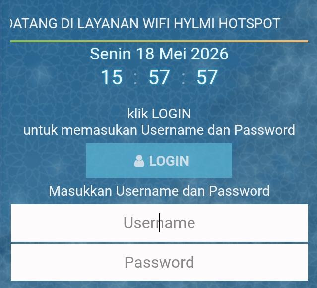
Ini adalah tampilan hotspot untuk mikrotik dengan menggunakan javascript yang saya gunakan untuk lomba S2C
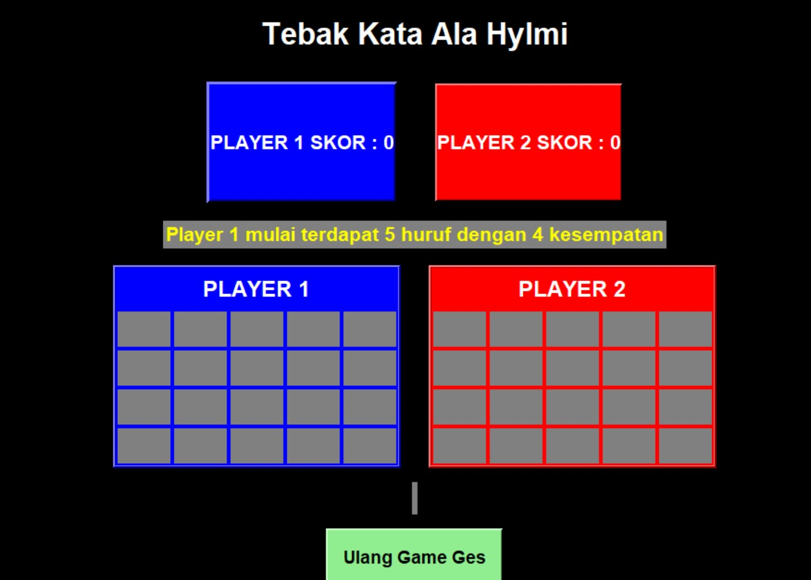
Game tebak kata yang dapat dimainkan oleh dua orang, yang dimana kedua player bergantian menebak kata yang benar
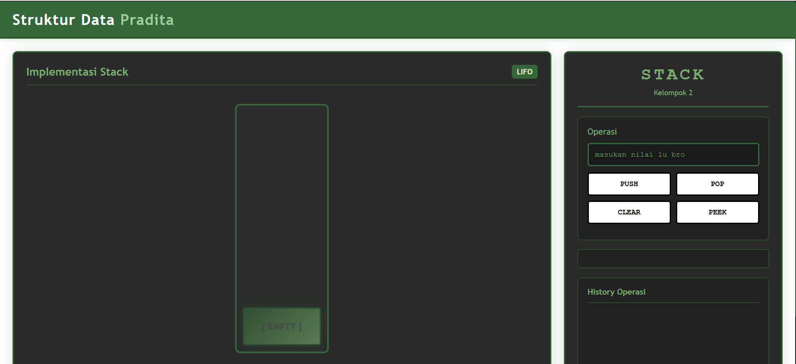
Website ini merupakan website yang dibuat oleh saya dan tim saya. Kegunaan dari website ini adalah untuk memvisualisasikan cara kerja dan operasi stack dalam struktur data.
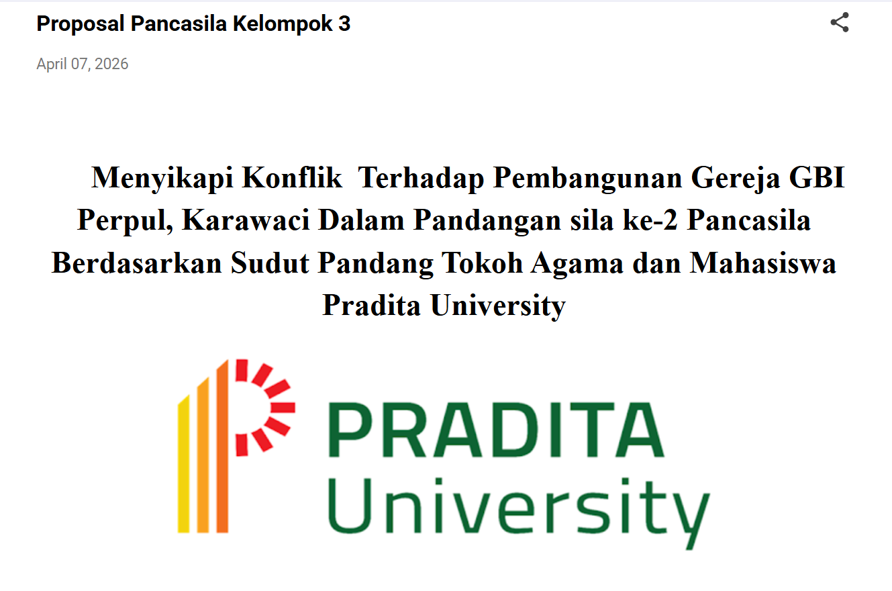
Proposal ini berisi latar belakang dari konflik pembangunan GBI Perpul Karawaci, tujuan pengkajian, rumusan masalah, manfaat pengkajian, landasan materi dan juga metode pelaksanaan dari pengkajian konflik pembangunan GBI Perpul Karawaci. Informasi yang kami dapatkan berasal dari tokoh agama dan tanggapan mahasiswa terhadap konflik pembangunan GBI Perpul Karawaci. Link proposal : link proposal
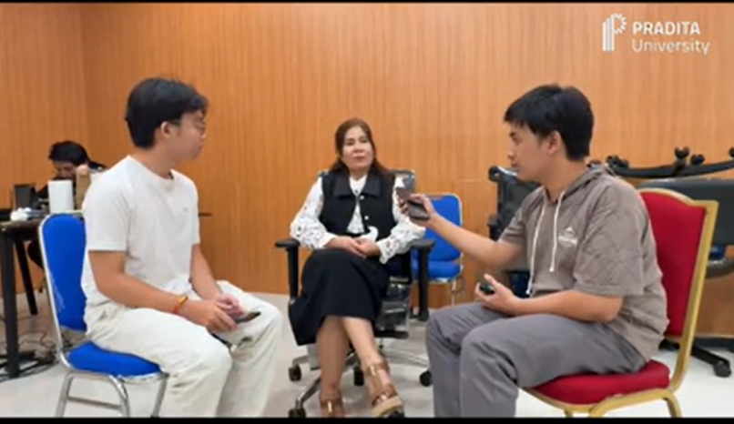
Podcast ini berisi tanggapan dari tokoh agama dan mahasiswa Pradita University terhadap konflik pembangunan GBI Perpul Karawaci, yang dimana informasi yang didapatkan berasal dari interview tokoh agama yaitu Dr. Djoys Rantung M.Th., mahasiswa Pradita University dan juga kuisioner yang kemudian kami simpulkan ketiga sumber informasi tersebut di dalam podcast diskusi kami. Link podcast : link podcast
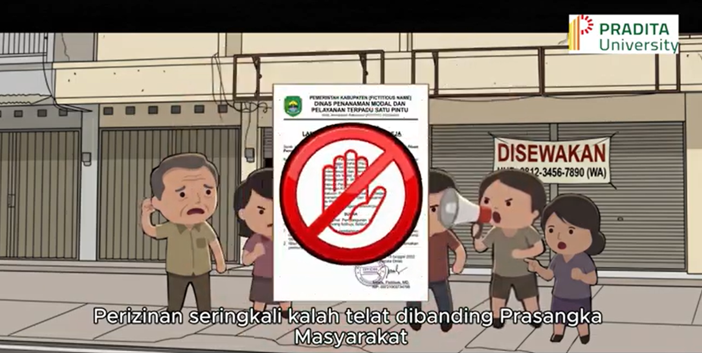
videografis ini menekankan bahwa konflik GBI Perpul Karawaci berakar pada krisis empati dan prasangka masyarakat yang sering kali mengalahkan aturan perizinan . Sesuai dengan sila kedua Pancasila, videografis ini mengajak kita untuk berhenti mendominasi hak orang lain dan mulai mempraktikkan toleransi nyata dengan menghargai martabat setiap manusia tanpa memandang agamanya. Link videografis : Link Videografis
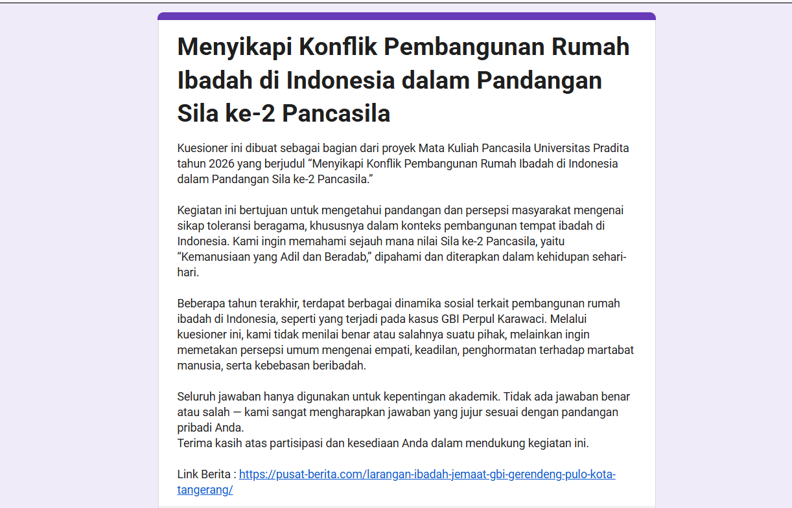
Kuisioner ini berisi pernyataan-pernyataan terkait personalitas dan konflik pembangunan GBI Perpul Karawaci. Kuisioner ini menggunakan skala likert untuk mengetahui setuju atau tidaknya mahasiswa Pradita University terhadap pernyataan-pernyataan tersebut. Link kuisioner : Link Kuisioner
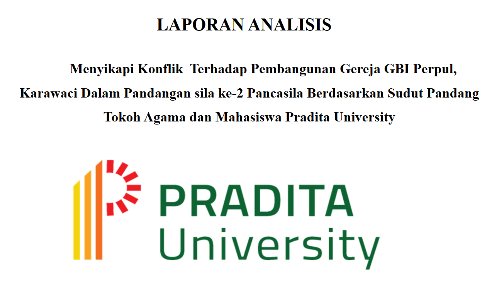
Laporan ini menganalisis konflik pembangunan GBI Perpul Karawaci melalui sila kedua Pancasila, dengan menyimpulkan bahwa akar permasalahan bukan sekadar urusan administrasi, melainkan adanya krisis empati, rendahnya literasi toleransi, serta pengaruh negatif algoritma media sosial dan fanatisme kelompok laporan ini mengajak masyarakat dan mahasiswa untuk tidak hanya menjadikan toleransi sebagai slogan atau teori, tetapi mempraktikkannya melalui tindakan nyata dan dialog yang sehat guna memanusiakan sesama di tengah kemajemukan Indonesia, Link : link laporan analis
Setelah saya melakukan semua projek pancasila, saya menjadi sadar bahwa ternyata toleransi itu sangat penting dalam kehidupan sehari-hari. Kasus pembangunan GBI Perpul Karawaci mengingatkan saya untuk lebih menghargai perbedaan dan menjaga kerukunan antar umat beragama. Saya belajar bahwa dengan saling menghormati, kita bisa hidup berdampingan dengan damai meskipun memiliki keyakinan yang berbeda. Pengalaman ini membuat saya lebih terbuka dan berkomitmen untuk terus memupuk toleransi dalam diri saya dan lingkungan sekitar
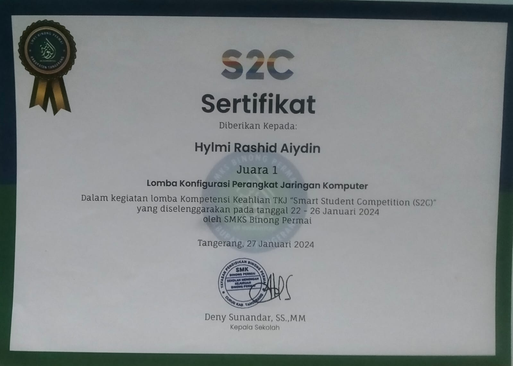
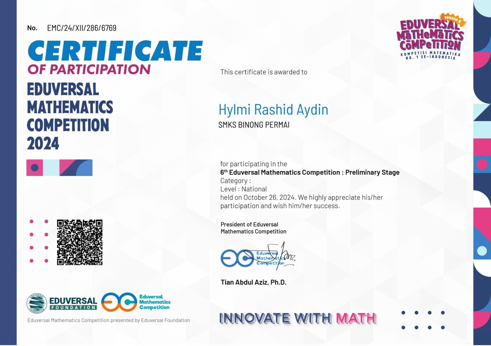
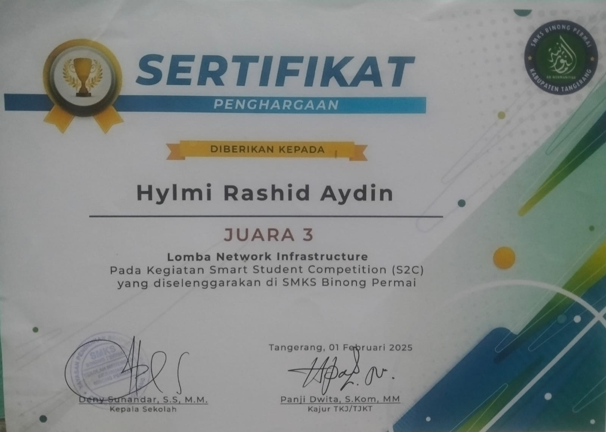